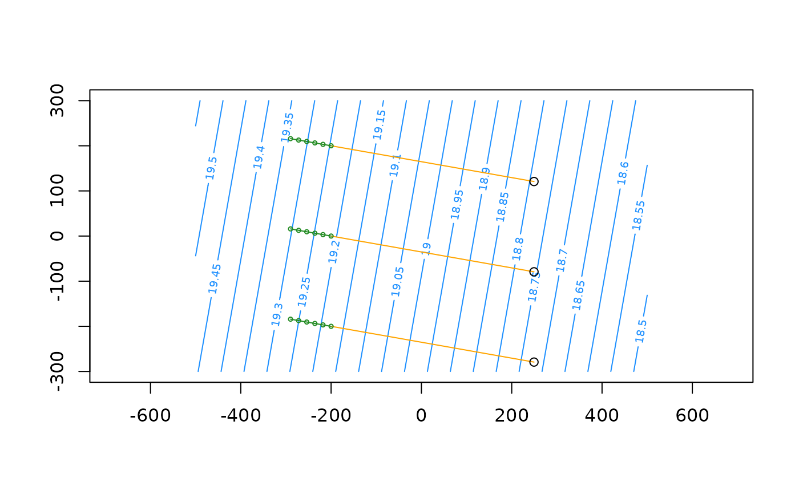
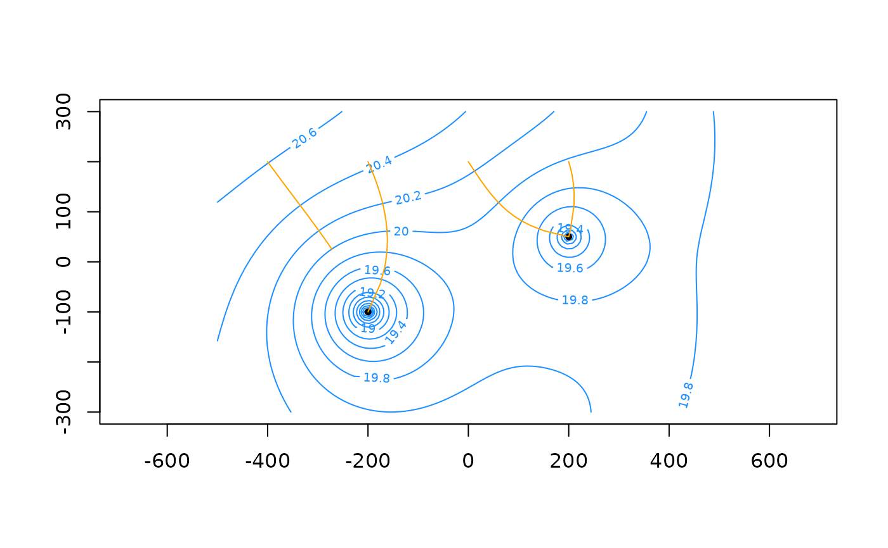
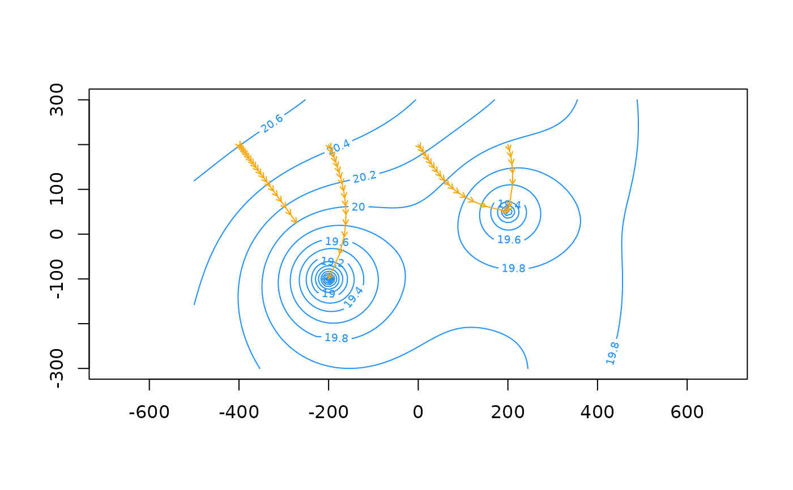

tracelines() tracks particle locations moving forward or backward with the advective groundwater flow
by numerically integrating the velocity vector. The resulting set of connected coordinates produces the
tracelines.
endpoints() obtains the final time and locations of tracked particles.
Usage
tracelines(
aem,
x0,
y0,
z0,
times,
forward = TRUE,
R = 1,
tfunc = NULL,
tol = 0.001,
ncores = 0,
...
)
endpoints(tracelines, ...)
# S3 method for class 'tracelines'
plot(x, y = NULL, add = FALSE, type = "l", arrows = FALSE, marker = NULL, ...)Arguments
- aem
aemobject.- x0
numeric vector with starting x locations of the particles.
- y0
numeric vector with starting y locations of the particles.
- z0
numeric vector with starting z locations of the particles.
- times
numeric vector with the times at which particle locations should be registered.
- forward
logical, should forward (
TRUE; default) or backward (FALSE) tracking be performed.- R
numeric, retardation coefficient passed to
velocity(). Defaults to 1 (no retardation).- tfunc
function or list of functions with additional termination events for particles. See details. Defaults to
NULL.- tol
numeric tolerance used to define when particles have crossed a line element. Defaults to 0.001 length units.
- ncores
integer, number of cores to use when running in parallel. Defaults to 0 (no parallel computing). See details.
- ...
additional arguments passed to
plot()orarrows()when plotting. Otherwise ignored.- tracelines
object of class
tracelinesas returned bytracelines().- x
object of class
tracelines.- y
ignored
- add
logical, should the plot be added to the existing plot? Defaults to
FALSE.- type
character indicating what type of plot to draw. See
plot(). Defaults to'l'(lines).- arrows
logical indicating if arrows should be drawn using
arrows(). Defaults toFALSE.- marker
numeric, time interval at which to plot point markers. Defaults to
NULL(no markers). See details.
Value
tracelines() returns an object of class tracelines which is a list with length equal to the number of particles where each list element contains
a matrix with columns time, x, y and z specifying the registered time and coordinates of the particle as it is tracked through the flow field.
The final row represents either the location at the maximum times value or, if the particle terminated prematurely, the time and location of the termination.
The matrices are ordered in increasing time. By connecting the coordinates, the tracelines can be produced.
endpoints() returns a matrix with columns time, x, y and z specifying the final time and coordinates
of the particles in the tracelines object.
Details
deSolve::lsoda() is used to numerically integrate the velocity vector.
Particles are terminated prematurely when they have reached the inner annulus of well elements, when they have crossed a line element (or enter half its non-zero width on either side) or when they travel above the saturated aquifer level (i.e. the water-table for unconfined conditions or the aquifer top for confined conditions), or below the aquifer base. Note that these last two conditions can only occur in models with vertical flow components. The returned time value is the time of termination.
The tfunc argument can be used to specify additional termination events. It is a function (or a list of functions) that
takes arguments t, coords and parms. These are, respectively, a numeric value with the current tracking time,
a numeric vector of length 3 with the current x, y and z coordinate of the particle, and a list with elements
aem and R (named as such). It should return a single logical value indicating if the particle should terminate. See examples.
If initial particle locations are above the saturated aquifer level, they are reset to this elevation with a warning.
Initial particle locations below the aquifer base are reset at the aquifer base with a warning. A small
perturbation is added to these elevations to avoid the particle tracking algorithm to get stuck at these locations.
If the algorithm does get stuck (i.e. excessive run-times), try resetting the z0 values to elevations well inside the saturated domain.
Initial particle locations inside a termination point are dropped with a warning.
Backward particle tracking is performed by reversing the flow field (i.e. multiplying the velocities with -1).
Traceline computation is embarrassingly parallel. When ncores > 0, the parallel package is used to set up the cluster with the requested nodes and
the tracelines are computed using parallel::parLapplyLB(). ncores should not exceed the number of available cores as returned by parallel::detectCores().
Examples
# create a model with uniform background flow
k <- 10
top <- 10; base <- 0
n <- 0.2
R <- 5
hc <- 20
uf <- uniformflow(TR = 100, gradient = 0.001, angle = -10)
rf <- constant(TR, xc = -1000, yc = 0, hc = hc)
m <- aem(k, top, base, n = n, uf, rf)
# calculate forward particle traces
x0 <- -200; y0 <- seq(-200, 200, 200)
times <- seq(0, 25 * 365, 365 / 4)
paths <- tracelines(m, x0 = x0, y0 = y0, z = top, times = times)
endp <- endpoints(paths)
xg <- seq(-500, 500, length = 100)
yg <- seq(-300, 300, length = 100)
# plot
contours(m, xg, yg, col = 'dodgerblue', nlevels = 20)
plot(paths, add = TRUE, col = 'orange')
points(endp[, c('x', 'y')])
# Backward tracking with retardation; plot point marker every 5 years
paths_back <- tracelines(m, x0 = x0, y0 = y0, z0 = top, times = times, R = R, forward = FALSE)
plot(paths_back, add = TRUE, col = 'forestgreen', marker = 5*365, cex = 0.5)

# -------
# Termination at wells, line-sinks and user-defined zone
w1 <- well(200, 50, Q = 250)
w2 <- well(-200, -100, Q = 450)
ls <- headlinesink(x0 = -100, y0 = 100, x1 = 400, y1 = -300, hc = 7)
m <- aem(k, top, base, n = n, uf, rf, w1, w2, ls)
# User-defined termination in rectangular zone
tzone <- cbind(x = c(-300, -200, -200, -300), y = c(150, 150, 100, 100))
termf <- function(t, coords, parms) {
x <- coords[1]
y <- coords[2]
in_poly <- x <= max(tzone[,'x']) & x >= min(tzone[,'x']) &
y <= max(tzone[,'y']) & y >= min(tzone[,'y'])
return(in_poly)
}
x0 <- c(-300, -200, 0, 200, 300)
y0 <- 200
times <- seq(0, 5 * 365, 365 / 15)
paths <- tracelines(m, x0 = x0, y0 = y0, z0 = top, times = times, tfunc = termf)
contours(m, xg, yg, col = 'dodgerblue', nlevels = 20)
plot(m, add = TRUE)
polygon(tzone)
plot(paths, add = TRUE, col = 'orange')
# -------
# model with vertical flow due to area-sink
as <- areasink(xc = 0, yc = 0, N = 0.001, R = 1500)
m <- aem(k, top, base, n = n, uf, rf, w1, w2, as)
# starting z0 locations are above aquifer top and will be reset to top with warning
x0 <- seq(-400, 200, 200); y0 <- 200
times <- seq(0, 5 * 365, 365 / 4)
paths <- tracelines(m, x0 = x0, y0 = y0, z0 = top + 0.5, times = times)
#> Warning: Resetting z0 values above saturated aquifer level or below aquifer base
contours(m, xg, yg, col = 'dodgerblue', nlevels = 20)
plot(m, add = TRUE)
plot(paths, add = TRUE, col = 'orange')

# -------
# plot vertical cross-section of traceline 4 along increasing y-axis (from south to north)
plot(paths[[4]][,c('y', 'z')], type = 'l')
# -------
# parallel computing by setting ncores > 0
mp <- aem(k, top, base, n = n, uf, rf)
pathsp <- tracelines(mp, x0 = x0, y0 = y0, z = top, times = times, ncores = 2)
# -------
# plot arrows
contours(m, xg, yg, col = 'dodgerblue', nlevels = 20)
plot(paths, add = TRUE, col = 'orange', arrows = TRUE, length = 0.05)

# plot point markers every 2.5 years
contours(m, xg, yg, col = 'dodgerblue', nlevels = 20)
plot(paths, add = TRUE, col = 'orange', marker = 2.5 * 365, pch = 20)
# plot point markers every 600 days
plot(paths, add = TRUE, col = 'forestgreen', marker = 600, pch = 1)